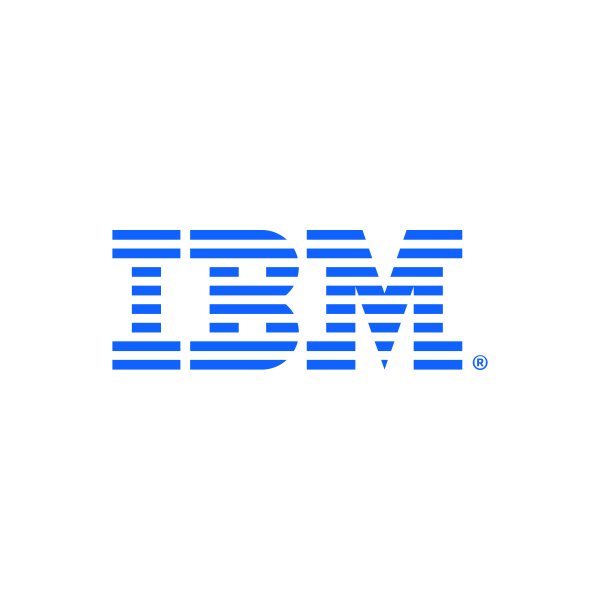
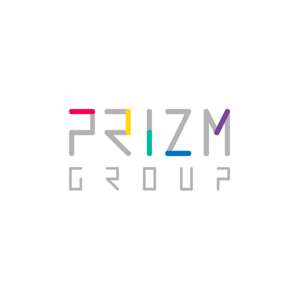
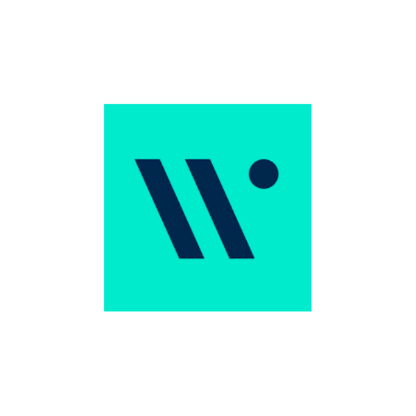
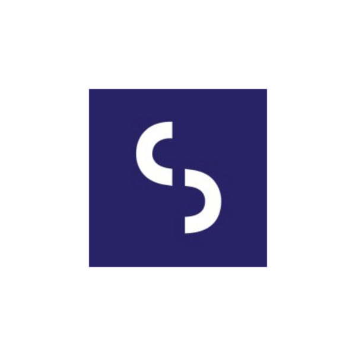

|
Hi, I'm Yoka. I have been working on UX/UI research, design, and strategy in different companies for the past six years, including startups, IT firms, and multinational corporations. Between 2020-2023, I was part of the design team at IBM consulting iX, building a relationship with interdisciplinary IBM and client teams to deliver business value to the client and create opportunities for IBM. I specialize in covering quantitative and qualitative data in a delightful experience that is easy to use and user-centric. By communicating actively with the clients, I am able to able to efficiently meet business goals. I would say my biggest strength is my highly productive ability and interdisciplinary background which together create great collaboration with teams and accelerate workflow for organizations and businesses. The successful projects I have worked with clients on include: OCBC Wing Hang Bank mobile application, AIA insurance Benefit Optimizer, and DS Smith service design. I have a Master's in Design Strategies from The Hong Kong Polytechnic University, where I received a fellowship. I'm passionate about using design to add value to businesses, and I'm eager to contribute my skills and knowledge to a company that shares this vision. Please check my résumé to learn more about me. Thanks for stopping by! Want to chat? ☕ Feel free to drop me a line! |
kudos
Below are some kudos, letters of recommendation, and LinkedIn recommendations I've received over the years, listed [mostly] in reverse chronological order.
|  |
After two years of crafting delightful UI interactions and designing some of the best UX
experiences for financial enterprises in Hong Kong, Yoka has a reputation as a skillful designer
ready for the next big thing. Since July 2022, Yoka has been under my supervision on a global
project – designing digital enterprise solutions that handle complex data models for one of the
biggest packaging businesses in the world.
Michael Tam, Global Design Director,
IBM iX Global Centre of Competence (CoC)
|
|---|---|
|
Yoka is an exceptional UIUX professional and she is excellent in front of an
executive team. She has thrived on solving complex business problems through great interaction design
and user research and loves business strategy, vision, and planning.
Paul Lee, Experience Design Lead,
IBM iX
|
|
|
Yoka displayed great talents in UX research and design, especially crafting
user-centric UX flows and high-fidelity wireframes to satisfy the client's needs and ensure timely
deliverables. We always had a great collaboration on defining To-Be user journey for the purpose of
solution design to satisfy the client's business objectives.
Belinda Chan, Experience Design Lead,
IBM iX
|
|
|
Yoka is a great communicator and collaborator. She regularly works with our
development team, product owner, and other team members to ensure that her designs are implemented
successfully. Her ability to work independently while also seeking input from others when necessary is
a testament to her professionalism and maturity.
Frances Andrews, Business Transformation Consultant,
IBM UK
|
|
|  |
Yoka has excelled in this role and exhibited high levels of productivity. She has
created a high volume of products that provide meaningful and relevant experiences to users.
Timmy Tin, Director of IT,
Prizm Group - Global Digital Marketing Agency
|
|  |
Yoka has shown great dedication and passion towards her work. Her determination
and commitment is
also reflected in her projects and she has been a great addition to our team.
Arthur Kuipers, Creative Director,
WECREATE Advertising Agency
|
|  |
Yoka is a polite, skilful, independent, self-motivated and reliable employee, she
has proved herself a passionate and enthusiastic UI/UX designer, and was eager to learn new areas of
digital marketing and social media designs.
Daniel Tse, Founder and Director,
Sanity Solutions
|